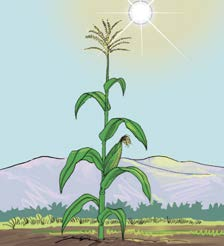
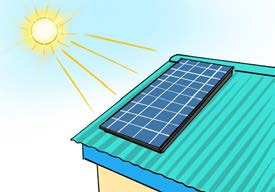
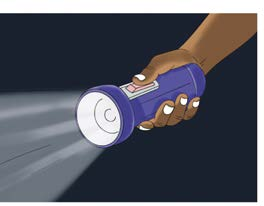

Fotosinthesisi: Mimea hutumia mwanga kutoka jua kutengeneza chakula chao. Mchakato huu husaidia mimea kukua na kuwa na afya.

Paneli za sola: Paneli za sola huchukua mwanga wa jua na kubadilisha kuwa umeme, ambao unaweza kutumika nyumbani.
Lenzi (glasi za kukuzia): Lenzi hutumia mwanga kufanya vitu kuonekana vikubwa na wazi zaidi.

Kurunzi: Kurunzi hutumia mwanga kutusaidia kuona gizani.
Nishati ya sauti
Sauti ni aina ya nishati ambayo tunaweza kuisikia. Sauti hutokana na mitetemo ya vitu mbalimbali. Nishati hii husambaa kutoka kwenye chanzo kwenda sehemu nyingine kwa kwenda mbele na kurudi nyuma. Unapopiga ngoma, filimbi au gitaa, kinachotokea ni sauti. Vilevile, vyanzo vingine vya sauti ni